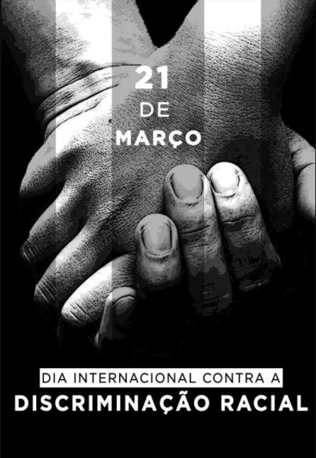

O que é discriminação racial?
Qualquer comportamento ou fala de distinção, exclusão, restrição ou preferência por determinada raça, nacionalidade, ascendência, cor ou ética é considerado discriminação racial.
No Brasil, muitas vezes esse termo é substituído pela palavra “racismo” e relacionado somente às pessoas negras.Isso se deve à construção histórica e social da discriminação contra africanos e descendentes, que se iniciou no século 16 com o transporte de escravos oriundos de países africanos comandado por portugueses.
Todavia, esse termo também pode ser aplicado a outras etnias.
O Brasil é um país formado por uma rica diversidade cultural. Segundo dados do Instituto de Pesquisa e Estatística (2019), cerca de 42% da população se domina branca, 46% se declara como parda, 9,4% como negros e 1,1% como indígenas ou asiáticos. Embora o cenário ideal seja de convivência harmônica, a realidade não é bem assim.
Apesar da discriminação racional ser crime no Brasil, ainda há muitos casos de repúdio e de violência contra expressões culturais e religiosas diferentes. A cor da pele é outro motivo para preconceito, em particular contra pessoas negras.
O Dia Internacional contra a Discriminação Racial.
O Dia Internacional contra a Discriminação Racial é celebrado anualmente em 21 de março.
Esta é uma importante data que reforça a luta contra o preconceito racial em todo o mundo.

A luta contra a discriminação racial só começou a se intensificar no Brasil após a Constituição Federal de 1988, que incluía o crime de racismo como inafiançável e imprescritível.
A eliminação de qualquer tipo de discriminação é um dos pontos centrais da Declaração Universal das Nações Unidas:
“Discriminação Racial significa qualquer distinção, exclusão, restrição ou preferência baseada na raça, cor, ascendência, origem étnica ou nacional com a finalidade ou o efeito de impedir ou dificultar o reconhecimento e exercício, em bases de igualdade, aos direitos humanos e liberdades fundamentais nos campos político, econômico, social, cultural ou qualquer outra área da vida pública” (Artigo I da Declaração das Nações Unidas sobre a Eliminação de Todas as Formas de Discriminação Racial).
ONG’s e instituições contra o preconceito racial organizam debates e outras atividades que auxiliem na tentativa de conscientizar a população a acabar com qualquer referência ao racismo e discriminação racial.
Infelizmente, ainda hoje o preconceito e discriminação racial é latente em várias partes do mundo, inclusive no Brasil.
Quando se fala em “combate à discriminação racial” significa acabar com todos os tipos de intolerâncias relacionadas com a etnia ou cor de pele do indivíduo, seja ele negro, branco, índio, oriental e etc.
Origem do Dia Internacional Contra a Discriminação Racial
O Dia Internacional contra a Discriminação Racial foi criado pela Organização das Nações Unidas (ONU), de acordo com a Resolução A/RES/2142 (XXI) de 1966, em memória ao “Massacre de Shaperville”, em 21 de março de 1960.
Nesta data, aproximadamente vinte mil pessoas protestavam contra a “lei do passe”, em Joanesburgo, na África do Sul. Esta lei obrigava os negros a andarem com identificações que limitavam os locais por onde poderiam circular dentro da cidade.
Tropas militares do Apartheid atacaram os manifestantes e mataram 69 pessoas, além de ferir uma centena de outras.
Em homenagem à luta e memória desses manifestantes, o Dia Internacional contra a Discriminação Racial é comemorado em 21 de março.